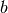
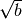

This page contains some bonus questions which extend the standard exercises. No solution is provided except for the first extra for exercise 4.
In exercise 1.d., you can plot also the test statistic distribution from theta using plot_histogram.
For exercise 1., implement the case of two bins, one with background only and the other with signal and background. Assume you do not know the background level, but you know the extrapolation factor. So the Poisson mean in one bin is b and in the other is tau * b + s where s and b are the unknown model parameters and tau is a known constant (e.g. tau=1); this is known as the “onn/off” problem. Write down a test statistic definition you think makes sense and give a recipe for deciding whether or not an observation is a 3sigma effect. Use toy-Monte Carlo to validate your recipe (checking that the type-I error rate is indeed what you claim by 3sigma) for different values of b.
In exercise 2.a., implement the Neyman construction using the normal approximation that n is distributed around  with width . Plot these normal distributions (e.g. with plot_xy). This normal approximation is useful to intuitively understand some behavior of upper limits which is also present in more complicated cases, e.g. the effect that adding a “large” uncertainty on the signal acceptance (such as 20%) usually changes the limit only very little, as such an uncertainty only changes the relevant normal distributions very little.
For exercise 3.c., you can
- calculate the limit for the shape model
- Using get95up as template, implement get95low for the lower limit. Note that by citing an interval with the interval ends at get95low/get95up you constructed a 90% C.L. Bayesian “central” interval.
For exercise 3., make coverage studies, i.e. determine frequentist properties of the Bayesian intervals for the counting experiment with fixed b by:
- generating toy data according to some fixed s (use the methods from exercise 1. for that)
- on each toy data, calculate the 95% C.L. upper limit
- count the fraction of toys in which the true value of s is lower than the derived limit; this is the coverage
Repeating this for different values of s, you can make a “coverage vs. s” plot. Such a study of the “frequentist properties” of a Bayesian method can be helpful to convince frequentists that your Bayesian method leads to results that also make sense from the frequentist point of view.